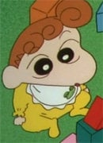
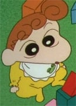

Cartoon Characters Image Gallery
Doraemon
Doraemon (ドラえもん) is a Japanese manga series written and illustrated by Fujiko F. Fujio. The manga was first serialized in 1969.
Shinchan
Shin-chan (クレヨンしんちゃん Kureyon Shinchan), internationally known as Shinchan, is a manga (Japanese comic strip) and anime (Japanese animation video) series written and illustrated by Yoshito Usui. The original comic story was first published in the magazine Weekly Manga Action on 11 April 1990.

 

Pokemon
Pokémon,[a] abbreviated from the Japanese title of Pocket Monsters,[b] and currently branded in English as Pokémon the Series,[c] is a Japanese anime television series, part of The Pokémon Company's Pokémon media franchise, which premiered on TV Tokyo in April 1997.
Dragon Ball Z
Dragon Ball Z[c] is a Japanese anime television series produced by Toei Animation. Part of the Dragon Ball media franchise, it is the sequel to the 1986 Dragon Ball television series and adapts the latter 325 chapters of the original Dragon Ball manga series created by Akira Toriyama.